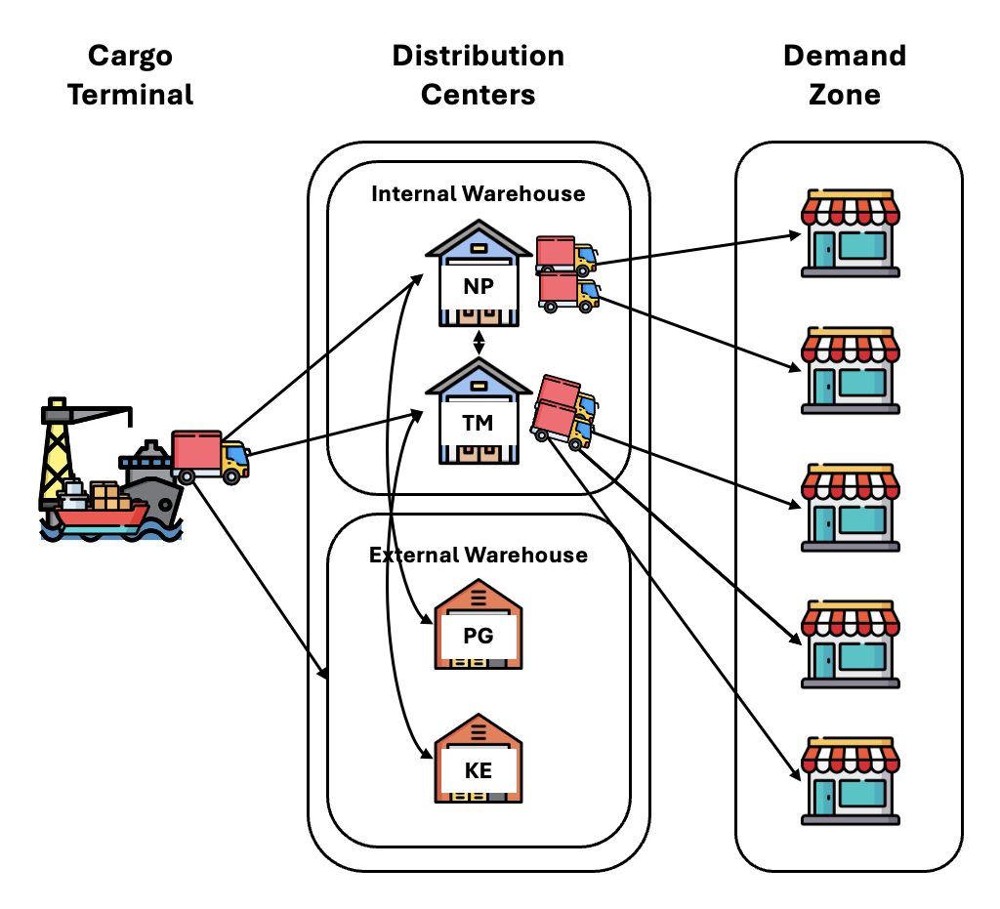

Inventory Allocation Optimisation
at Towngas Hong Kong
A Seven-Day Rolling Horizon MILP Approach
Supervisor: Professor ZHANG, Jiheng · Teaching Assistant: NG, Cho Yin
Department of Industrial Engineering and Decision Analytics, HKUST · May 2026
Presentation Roadmap
Table of Contents
Background & Problem
Towngas business context, distribution network overview, and the daily operational challenges that motivated this project.
Proposed Solution
Why a rolling-horizon MILP was chosen over alternative methods. Literature context and justification for the modelling approach.
Mathematical Formulation & Simulation
Full theoretical model, scope choices, data assumptions, and the backtesting methodology used to validate performance.
Results & Evaluation
Cost comparison against three baselines, cumulative-cost and inventory-level charts, and interpretation of key findings.
Prototype & Integration
Decision-support web application and the integration pipeline for deploying the model into Towngas daily operations.
Limitations & Future Work
Honest assessment of current model scope, six limitations with research-backed improvement directions.
Section 1 — Background
About Towngas Hong Kong
Company Overview
- Founded in 1862 — one of Hong Kong's oldest utility companies
- Core business: piped gas supply, gas appliances, kitchen equipment, water heaters, and household products
- Serves residential and commercial customers across Hong Kong Island, Kowloon, and the New Territories
- Operates a multi-echelon physical distribution network for thousands of appliance SKUs
(replace with official photo)
Focus of this project: The logistics team makes daily decisions about how to move appliance goods through the distribution network — an operationally intensive process currently handled through experience and judgment.
Section 1 — Problem
Distribution Network & Daily Challenges

Cargo Terminal
Internal WH
External WH
Core question: How do we pre-position inventory across CT, NP, TM, and EX — so that backlog is minimised and total operational cost is reduced?
Section 2 — Proposed Solution
Our Solution: 7-Day Rolling Horizon MILP
What We Propose
- A Mixed-Integer Linear Programme (MILP) that jointly optimises all four daily decisions (CT collection, NP↔TM transfers, EX offload/retrieval) simultaneously
- Solved once (or twice) per working day with a 7-day lookahead window — only day-1 decisions are executed; the horizon rolls forward each morning
- Acts as a decision-support tool, not an autonomous system — managerial review and approval remain essential
Why This Helps Towngas
- Optimises total cost — not just today's decision in isolation, but the full week's trade-offs
- Consistent and auditable — every recommendation has a clear cost rationale
- Complements expertise — the model captures constraints and costs; the manager adds domain knowledge and operational context that the model cannot see
Key Abbreviations Used in This Presentation
Section 2 — Model Building
How We Built the Optimisation Model
Built iteratively with Towngas feedback and backtesting, adding realism step by step.
Section 2 — Method Justification
Why MILP with Rolling Horizon?
| Method | Optimality | Data Requirement | Interpretability | Runtime | Fit for This Problem |
|---|---|---|---|---|---|
| MILP + Rolling Horizon | Provable | Confirmed orders + costs | High | Seconds per day | ✓ Our choice |
| Greedy / Heuristic | None | Minimal | High | Near-instant | Baseline for comparison |
| Stochastic Programming | Scenario-based | Demand distributions | Low | Hours | Overkill; demand largely deterministic here |
| Reinforcement Learning | Policy-based | Large training set | Low | High (train) | Black-box; hard to justify to managers |
| Simulation-Optimisation | Approximate | Full demand simulation | Medium | High | Useful future extension, not day-1 deployment |
Deterministic-Equivalent is Appropriate
Project and prepick orders — which dominate APPL demand — are confirmed days in advance. Stochastic programming adds model complexity without clear benefit when the uncertainty is already small (Bertsimas & Thiele, 2006).
Provable Optimality & Auditability
Gurobi certifies solution quality with an optimality gap. Each daily decision has a quantified cost rationale — essential for managerial trust and regulatory transparency (Wolsey, 1998).
Rolling Horizon Handles Non-Stationarity
New containers arrive daily; orders are updated throughout the week. Rolling horizon re-optimises with fresh data each day, naturally correcting for forecast errors (Garcia et al., 1989; Clark & Scarf, 1960).
Section 3 — Mathematical Formulation
Full Theoretical Model: Formulation
Sets & Indices
$\mathcal{T} = \{1,\ldots,H\}$ — horizon ($H=7$); $\mathcal{H}$ — holidays; $\mathcal{W}^{+} = \mathcal{T}\setminus\mathcal{H}$ — working days;
$\mathcal{P}$ — active project/prepick order lines
Key Decision Variables
$y^{w\to w'}_{i,t} \geq 0$ — transfer SKU $i$ from $w$ to $w'$
$x^{\mathrm{EX}\to w}_{i,t},\; x^{w\to\mathrm{EX}}_{i,t} \geq 0$ — EX retrieve / offload
$s_{i,w,t} \geq 0$ — walk-in lost sales; $\;B_{i,w,t} \geq 0$ — backlog
$I_{i,w,t} \in \mathbb{R}$ — signed inventory position; $\;\eta_{c,t} \in [0,1]$ — CT overstay indicator
Cost Terms in Objective (symbols only)
Objective Function
Discount factor $\gamma^{t-1}$: weights day-1 costs at full value; progressively discounts future days reflecting decreasing forecast reliability. Future decisions will be revised as the horizon rolls forward.
Section 3 — Mathematical Formulation
Full Theoretical Model: Key Constraints
Inventory Balance — Internal Warehouses
Warehouse Capacity
$K^{\mathrm{NP}}$ and $K^{\mathrm{TM}}$ are confirmed APPL-specific capacities (see Appendix A).
Internal Transfer Capacity
$n^{\mathrm{trips}}$ round trips per day, each holding at most $P^{\mathrm{trip}}$ pallets.
CT Collection — Single Assignment & Availability
Each container is collected at most once; cannot be collected before its CT arrival day $\tau_c$.
CT Intake Capacity
Daily CBM-based intake limits $P^{\mathrm{NP}}_{\mathrm{intake}}$ and $P^{\mathrm{TM}}_{\mathrm{intake}}$ (see Appendix A).
CT Overstay Indicator
$\eta_{c,t} = 1$ if container $c$ remains uncollected past its FSP end day $\bar{\tau}^{\mathrm{FSP}}_c = \tau_c + F_c - 1$.
Does this theoretical model work in practice? It captures the full problem — but requires data (walk-in demand, allocation targets) not available for backtesting. The next slide explains how we adapt it for simulation.
Section 3 — Simulation Methodology
Adapting the Model for Backtesting
Simplifications from Theoretical → Simulation-Ready
| Feature | Status | Reason |
|---|---|---|
| Walk-in demand $D^{\mathrm{sto}}$ | Removed | APPL goods not sold at counter |
| Lost-sales variable $s_{i,w,t}$ | Removed | No walk-in demand to lose |
| Allocation targets $T_{i,w}$ | Removed | No reliable per-SKU forecast from 1 month |
| Signed inventory $I_{i,w,t}$ | Changed | → Physical on-hand $I^{\mathrm{on}}_{i,w,t}\geq 0$ |
| CT transport cost | Changed | → Per-size: $F^{\mathrm{CT}}_{20}$ vs $F^{\mathrm{CT}}_{40}$ |
| EX retrieval cost | Changed | → $\max(c^{\mathrm{ret}}_{\min}, c^{\mathrm{ret}}_{\mathrm{CBM}} \cdot \mathrm{vol})$ linearised |
Rolling Horizon Mechanics
Scope Choices & Data Assumptions
Why APPL Goods Only?
- Revenue significance: APPL is a key product category
- Data reliability: confirmed per-SKU CBM available for ~511 items
- Scope for proving the model — not a model limitation
Why Only 1 Month (January 2026)?
- Most complete and recent confirmed dataset available
- Sufficient for a rigorous proof-of-concept comparison
- Longer backtest is a planned future extension
SKU Volume Imputation
- 5-tier hierarchy: exact CBM → category median → material group → description-based → global fallback
CT Arrival Date Estimation
- Estimated as: collection date − ½ × FSP (midpoint assumption)
- Exact terminal manifests not available — a potential source of small error
Free Storage Period Mapping
- Confirmed supplier-level FSP table provided by Towngas (3–21 days by supplier × origin)
Section 4 — Evaluation
How Do We Know the Model Is Good? Baselines
We compare our MILP against three baselines — all sharing the same data, cost parameters, opening inventory, and APPL-only scope.
| Dimension | MILP (Ours) | Greedy Heuristic | Rule-Based Policy | Actual Operations |
|---|---|---|---|---|
| Planning horizon | 7 working days | Today only | Today only | Historical (no explicit plan) |
| CT collection trigger | Cost-optimal timing over 7 days | Demand urgency or FSP nearing | Collect on arrival day — always | Actual SAP GR date recorded |
| Internal transfers | Cost-optimal pre-positioning | Not proactively optimised | Not proactively optimised | Historical MVT-313 records |
| EX retrieval trigger | Cost-optimal (may pre-retrieve) | Only when backlog exists | Only when backlog exists | Reconstructed from overflow |
| Future demand visibility | Full 7-day confirmed orders | Today's demand only | Today's demand only | N/A |
Why Greedy?
Simulates how a busy manager naturally makes decisions — react to today's needs, collect when urgency arises. Represents a reasonable "human heuristic" baseline.
Why Rule-Based?
"Always collect containers immediately on arrival" feels safe and simple. This policy is common in practice — but it ignores whether warehouse space is ready, inflating EX holding costs.
Why Actual Operations?
The true counterfactual — reconstructed from Towngas's own SAP data. This tells us what the real cost of current practice was, providing the most operationally meaningful comparison.
Section 4 — Results
Where the Savings Come From
Total cost differences are driven mainly by external storage related costs, not CT transport.
Total Cost by Model
CT transport is similar across models, so total savings come mostly from better EX decisions.
External Cost Breakdown Only
External cost = EX Holding + EX Retrieval + EX Offloading
Key insight: MILP's cost advantage comes from reducing external storage dependence — especially EX holding — while CT transport remains broadly similar across all models.
Section 4 — Results
Cumulative Cost & Inventory Over Time
Cumulative cost over time (data truncated to 26 January 2026 — February data not available)

../visualization/cumulative_cost.pngThe MILP curve stays consistently below all baselines from day 1. The gap widens over time — demonstrating that the lookahead benefit compounds across the month.
Inventory levels (CBM) — NP, TM, and EX over the simulation period

../visualization/inventory_levels_cbm.pngMILP maintains lower EX inventory throughout. Rule-based consistently spills more goods to EX because it collects too early relative to demand. MILP EX is used only as needed — a cost-optimal buffer, not a reactive spillover.
Section 5 — Prototype
Decision-Support Prototype
prototype_demo.mp4 in the same folder to activateArchitecture Flow
Template
Loader
Solve
Extractor
UI
Prototype Outputs → Pain Points Solved
| Output | Addresses |
|---|---|
| CT Collection Plan — which containers to collect today & where | Q1: CT container decisions |
| NP ↔ TM Transfer Decisions — quantity by SKU | Q2: Internal transfer optimisation |
| EX Retrieve List — goods to bring back to warehouse | Q3: Pre-positioning from EX |
| EX Offload List — goods to move to external storage | Q3: Overflow management |
| Full 7-Day Plan (tabbed) + downloadable Excel | All Qs: Planning ahead for the week |
6-Step Daily Workflow
- Update the 7-sheet Excel template with today's inventory & orders
- Upload template to the Streamlit web app
- Click Run Optimisation — model solves in ~10 seconds
- Review KPI summary: CT collections, transfers, EX actions
- Inspect the 7-day tabbed decision plan; adjust if needed
- Download the Excel plan for record-keeping & dispatch
Section 5 — Integration
Integrating the Model into Towngas Operations
End-to-End Pipeline
AM / PM Dual-Run Concept
Decide: CT container collection for today; AM internal transfer quantities; EX offload if warehouse is near capacity.
Decide: PM internal transfer; preview tomorrow's decisions; update EX retrieval plan for next morning.
Section 5 — Integration
Together, they outperform either.
Section 6 — Limitations & Future Work
Current Limitations & Improvement Directions
L1: Naive Deterministic Demand Assumption
The simulation uses confirmed historical demand as a perfect forecast — a favourable assumption not available in live deployment.
Improvement directions:
- Demand forecasting: LSTM or Prophet models on SAP issue history (Makridakis et al., 2018)
- Robust optimisation: budget uncertainty sets replace stochastic distributions (Bertsimas & Thiele, 2006)
- Stochastic programming: scenario-based SAA when distributional data is sufficient (Shapiro et al., 2014)
- Longer rolling window: 14-day lookahead captures more demand — but increases solve time (time-accuracy trade-off)
L2: APPL-Only Simulation Scope
Capacity constraints do not reflect all product types sharing the same warehouse space.
Improvement directions:
- Full SKU expansion: extend CBM imputation to spare parts and meters; add all categories to the model
- SKU clustering: aggregate slow-moving items into representative groups to manage problem size (Zipkin, 2000)
- Presolve & variable elimination: sparse-row techniques to prune zero-activity SKUs before each solve
L3: Single-Month Simulation
January 2026 is one month — seasonal patterns (Lunar New Year peaks, summer demand) are not captured.
Improvement directions:
- Longer historical backtest: 12-month rolling window across available SAP history
- Walk-forward cross-validation: train on months 1–10, test on 11–12, repeat
- Seasonal stress tests: Lunar New Year and mid-year demand peaks as separate scenarios
L4: CT Arrival Date Estimation
$\tau_c$ is estimated from delivery documents — errors here affect collection urgency signals.
Improvement directions:
- Terminal manifest API: direct integration with cargo terminal operator's IT system for real-time $\tau_c$
- EDI feed: Electronic Data Interchange link to receive container arrival notifications automatically
- Confirmed advance notices: request container arrival dates from suppliers at time of shipment
L5: Static Cost Parameters
$h^{\mathrm{EX}}_d$, $F^{\mathrm{CT}}$, $c^{\mathrm{ret}}$ are fixed constants — real costs may fluctuate with contracts and market conditions.
Improvement directions:
- Dynamic re-calibration: pull actual invoice data monthly and update cost parameters automatically
- Sensitivity analysis: identify which cost parameters the optimal solution is most sensitive to (±10% perturbation)
- Contract negotiation support: run the model under alternative EX rate scenarios to inform supplier negotiations
L6: Computational Scalability (Full SKU Set)
Expanding to all SKUs and longer horizons will increase the number of binary variables $\delta_{c,w,t}$ substantially.
Improvement directions:
- Warm-starting: initialise Gurobi from yesterday's shifted solution to reduce branch-and-bound time
- Benders decomposition: split the CT collection (binary) and inventory (continuous) subproblems (Benders, 1962)
- LP relaxation bound: use LP relaxation as a fast lower bound to guide early termination (Wolsey, 1998)
Conclusion
What We Delivered
Full theoretical model for future deployment; simulation-ready model validated against real January 2026 data.
27.1% reduction vs reconstructed actual operations over 26 simulated working days. All four models compared fairly on identical data.
Streamlit web application — Excel template in, 7-day decision plan out. Ready for a parallel pilot today.
From Pain Points to Solutions
| Pain Point (from Slide 4) | Model Component That Addresses It | Result |
|---|---|---|
| Q1 — CT collection: when, which, where? | Binary $\delta_{c,w,t}$ + CT overstay cost $h^{\mathrm{CT}}$ in objective | Cost-optimal collection timing — no overstay in simulation |
| Q2 — NP ↔ TM transfers under capacity | Transfer variables $y^{w\to w'}_{i,t}$ + pallet capacity constraint | Pre-positioning aligned to 7-day confirmed demand |
| Q3 — EX offload/retrieve and pre-positioning | $x^{\mathrm{EX}}, n^{\mathrm{EX}}$ variables + $h^{\mathrm{EX}}_d$ cost incentivise lean EX use | Lowest EX inventory and offloading cost of all four models |
| Q4 — Approximate demand estimation | 7-day confirmed order horizon $D^{\mathrm{det}}_{i,w,t}$ as input | Decisions based on best available confirmed information |
A decision-support tool that combines optimisation with managerial expertise — to make consistently better daily inventory decisions at Towngas.
Thank You
We welcome your questions and feedback.
Reactive CT collection, suboptimal EX use, low forward visibility in daily inventory decisions
7-day rolling MILP — jointly optimises CT, transfers, and EX decisions every morning
27.1% cost saving vs actual operations · prototype ready for pilot · clear integration roadmap
Supervisor: Professor ZHANG, Jiheng · Teaching Assistant: NG, Cho Yin
Department of Industrial Engineering and Decision Analytics, HKUST · May 2026
Cost Parameters & Capacity Values
All values confirmed by Towngas and used across all four simulation models. These figures are confidential and should not be disclosed outside of this presentation.
Cost Parameters
| Symbol | Description | Value |
|---|---|---|
| $h^{\mathrm{EX}}_d$ | EX daily storage rate (HKD/m³/day) | 5.0 |
| $h^{\mathrm{EX}}_a$ | EX first-day arrival surcharge (HKD/m³) | 70.0 |
| $c^{\mathrm{ret}}_{\min}$ | EX retrieval minimum charge (HKD/trip) | 600.0 |
| $c^{\mathrm{ret}}_{\mathrm{CBM}}$ | EX retrieval per-CBM rate (HKD/m³) | 96.0 |
| $F^{w\to\mathrm{EX}}_{20}$ | EX offloading — 20' container (HKD) | 3,200 |
| $F^{w\to\mathrm{EX}}_{40}$ | EX offloading — 40' container (HKD) | 4,900 |
| $F^{\mathrm{CT}}_{20}$ | CT transport — 20' container to NP/TM (HKD) | 3,200 |
| $F^{\mathrm{CT}}_{40}$ | CT transport — 40' container to NP/TM (HKD) | 4,900 |
| $h^{\mathrm{CT}}$ | CT overstay penalty (HKD/m³/day beyond FSP) | 10,000 |
| $b$ | Backlog penalty (HKD/unit/day) | 10,000 |
| $\gamma$ | Daily discount factor | 1.0 (no discount) |
Warehouse & Operational Capacities
| Symbol | Description | Value |
|---|---|---|
| $K^{\mathrm{NP}}$ | NP APPL storage capacity (m³) | 1,088 |
| $K^{\mathrm{TM}}$ | TM APPL storage capacity (m³) | 3,690 |
| $P^{\mathrm{NP}}_{\mathrm{intake}}$ | NP daily CT intake limit (CBM/day) | ~72.6 |
| $P^{\mathrm{TM}}_{\mathrm{intake}}$ | TM daily CT intake limit (CBM/day) | ~145.2 |
| $n^{\mathrm{trips}}$ | Internal transfer round trips per day | 2 |
| $P^{\mathrm{trip}}$ | Pallets per internal transfer trip | 10 |
| $V^{\mathrm{NP}}_P$ | Pallet volume at NP (m³/pallet) | 2.267 |
| $V^{\mathrm{TM}}_P$ | Pallet volume at TM (m³/pallet) | 1.800 |
| $F_c$ | Free Storage Period (days, by supplier) | 3 / 7 / 14 / 21 |
| $H$ | Rolling horizon length (working days) | 7 |
NP intake = 33 pallets × 2.2 m³/pallet/day. TM intake = 66 pallets × 2.2 m³/pallet/day. Capacities are APPL-category specific as confirmed by Towngas.
Data Sources & Movement Types
Primary Data Files Provided by Towngas
| # | File / Source | Contents & Use |
|---|---|---|
| 1 | Dec 2025 Inventory Snapshot | Stock quantity per SKU per location → opening inventory $I^0_{i,w}$ for NP and TM |
| 2 | Jan 2026 Transaction Log | All SAP movement types (MVT 901, 903, 313, 315) → demand reconstruction, transfer history, exogenous supply |
| 3 | Jan 2026 Goods Receipt Log | MVT 101 container collections → CT container contents, collection dates, destination warehouses |
| 4 | SKU Master (APPL & White Goods) | ~511 appliance codes with unit CBM, material group, supplier → APPL scope definition + $v_i$ |
| 5 | Free Storage Period Lookup (New FSP) | Confirmed FSP by supplier × origin → assigns $F_c$ (3–21 days) to each container |
SAP Movement Type Classification
| MVT | Description | Model Use |
|---|---|---|
| 101 | Goods receipt from CT (container collection) | Container contents, collection date, destination |
| 313 | NP ↔ TM internal transfer (paired ± rows) | Actual operation replay — historical transfer $y$ |
| 315 | Exogenous inflow (local delivery / other plant) | Exogenous replenishment $r_{i,w,t}$ |
| 901 | Goods issued to customer (with reference) | Project/prepick demand $D^{\mathrm{det}}_{i,w,t}$ |
| 903 | Counter issue (walk-in, no reference) | Excluded — APPL not sold at counter |
Simulation Period
2 January 2026 – 31 January 2026 · 26 working days · Excludes weekends and public holidays identified from GR activity patterns
Active SKU Count
~500 active APPL SKUs per window (SKUs with zero stock, demand, and CT inflow are excluded to reduce problem size)